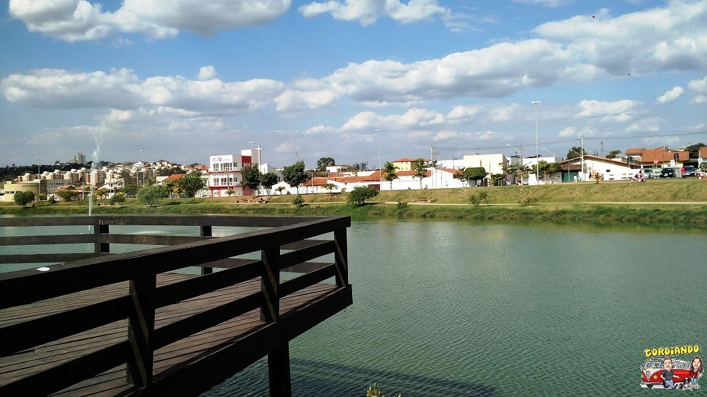

Parque em Sorocaba
Sorocaba tem muitos parques públicos Chico Mendes, da Biquinha, Botânico, Água Vermelha, Espanhóis
Sorocaba tem muitos parques públicos Chico Mendes, da Biquinha, Botânico, Água Vermelha, Espanhóis
Depois de um dia de trabalho um encontro com pessoas queridas. Opções de sobra na região.
Veja quais os melhores opções Guia da VEJA São Paulo.
Um das grandes conquistas de Sorocaba é o Parque Tecnológico.
Veja no mapa